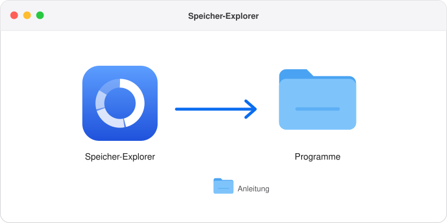
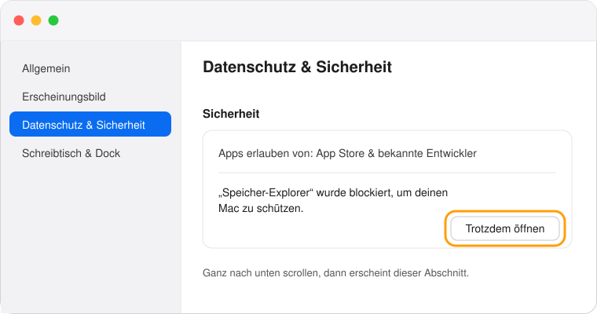
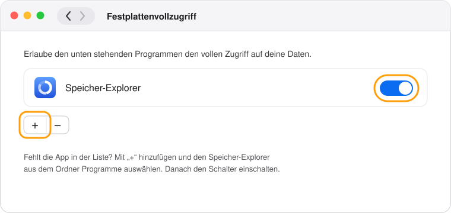
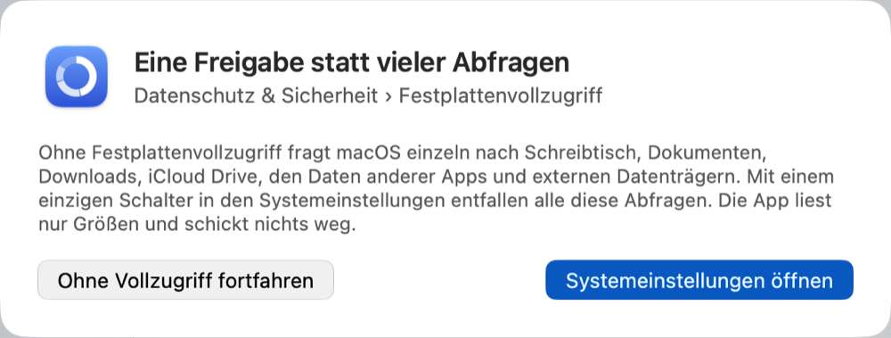

Speicher-Explorer installieren
Fünf kurze Schritte, alles mit der Maus. Die App ist kostenlos und schickt nichts ins Internet.
- Ziehe den Speicher-Explorer in den Ordner „Programme“. Danach kannst du dieses Fenster schließen.

- Öffne die App aus dem Ordner „Programme“. Beim ersten Mal meldet macOS, dass die App nicht überprüft werden konnte. Klicke auf „Fertig“.
- Erlaube den ersten Start. Öffne Systemeinstellungen › Datenschutz & Sicherheit, scrolle ganz nach unten und klicke auf „Trotzdem öffnen“. Danach startet die App; das ist nur ein einziges Mal nötig.

- Erteile den Festplattenvollzugriff. Die App bietet dafür „Systemeinstellungen öffnen“ an. Schalte dort den Speicher-Explorer ein; fehlt er in der Liste, füge ihn mit „+“ hinzu.

- Klicke in der App auf „App neu starten“. Ab jetzt misst sie alles ohne weitere Fragen.

Lieber mit der Konsole?
Im Terminal kopierst du die App und erlaubst den ersten Start in einem Rutsch. Den Festplattenvollzugriff kann auch die Konsole nicht erteilen; der letzte Befehl öffnet dafür die passende Systemeinstellung.
cp -R "/Volumes/Speicher-Explorer/Speicher-Explorer.app" /Applications/ xattr -dr com.apple.quarantine /Applications/Speicher-Explorer.app open /Applications/Speicher-Explorer.app open "x-apple.systempreferences:com.apple.preference.security?Privacy_AllFiles"